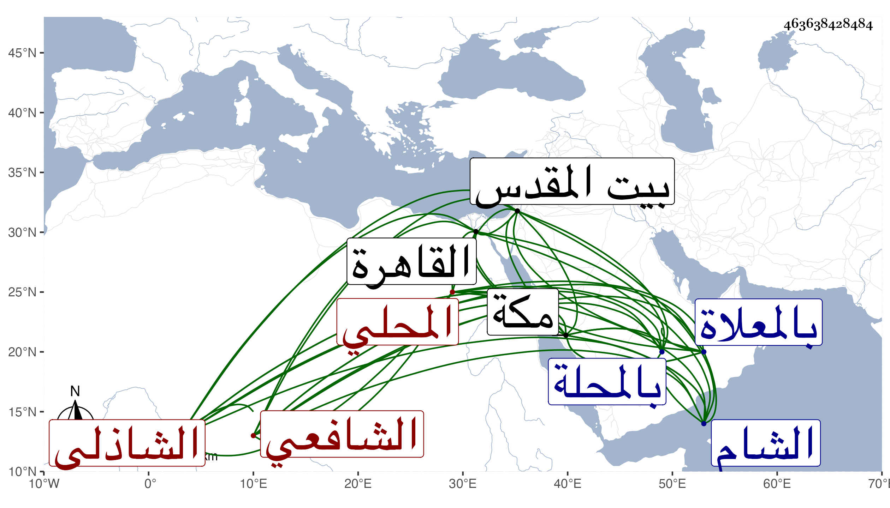

0902Sakhawi.DawLamic.ITO20230111-ara1.EIS1600.463638428484
Biography ID: 463638428484
383
محمد بن علي بن أحمد بن خلف بن شهاب بن علي المحب أبو الطيب بن النور المحلي الشافعي الشاذلي ويعرف بابن حميد بالتصغير وبابن ودن بفتح الواو والمهملة وآخره نون وسمي بعضهم جد أبيه محمدا والصواب خلف . ولد كما أخبرني به في ثالث عشري رمضان سنة ثلاث عشرة وثمانمائة وقيل بعد ذلك بالمحلة ونشأ بها فحفظ القرآن وصلى به وأربعي النووي والنهاية له في الفقه والحاوي الصغير والرحبية في الفرائض والملحة وألفية ابن ملك وجمع الجوامع ، وعرض على شيخنا والبساطي وغيرهما وبحث في الحاوي عند الشرف السبكي والبرهان الأبناسي والشهاب المحلي خطيب جامع ابن ميالة وآخرين وقرأ في الأصول والمعاني والبيان وغيرها من الفنون على العز عبد السلام البغدادي وكذا قرأ على البرهان الكركي وشيخنا وآخرين منهم ابن المجدي قرأ عليه في الفرائض والحساب وغيرها ، وسافر إلى الشام فقرأ على ابن ناصر الدين وعائشة ابنة ابن الشرائحي ثم سمع بالقاهرة معي على الرشيدي وغيره وحج وسمع بمكة على أبي الفتح المراغي والتقي بن فهد وذلك في سنة خمس وخمسين وزار بيت المقدس وأذن له بعض شيوخه في الافتاء والتدريس ، وتعانى الأدب فتميز وكتب عدة تصانيف منها النجمة الزاهرة والنزهة الفاخرة في نظام السلطنة وسلوك طريق الآخرة ولقبه أيضا بالجواهر المقعودة في إشارات النحلة والدودة دخل فيه من حيث أن النحلة لا بد لها من أمير نقيمه وتجتمع على رأيه ففي ذلك إشارة إلى أنه لا بد من الملك ومن حيث أن دود القز لا يقتصر على طعام واحد ولا يتسبب وأنه يفطم نفسه بعد الأربعين عن الأكل ويقبل على العزلة ونحو ذلك ففيه إشارات إلى من سلك طريق الآخرة ، وقرة عين الراوي في كرامات محمد بن صلح الدمراوي . ومحاسن النظام من جواهر الكلام في ذم الملك الغلام وكتاب في الحدود النحوية وآخر سماه البرق اللامع في ضبط ألفاظ جمع الجوامع في نحو أربعة كراريس ، وكان فاضلا لطيفا حسن العشرة متواضعا كتب عنه غير واحد من الفضلاء كتبت عنه قوله :
| تشاغل بالمولي رجال فأصبحت | منازلهم تنمو بمجد مؤثل |
| رجال لهم حال مع الله صادق | فإن لم تكن منهم بهم فتوسل |
وما أودعته في محل آخر . مات بمكة في عصر يوم الثلاثاء سادس عشر ربيع الأول أو الآخر سنة خمس وخمسين ودفن بالمعلاة رحمه الله وإيانا .
